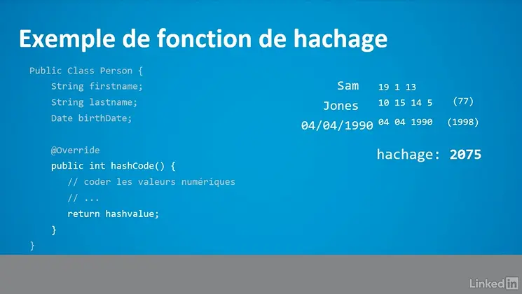
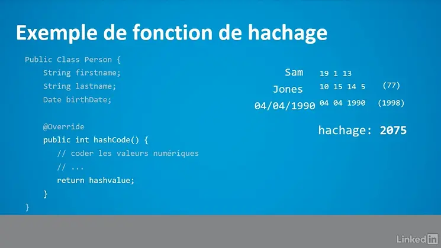
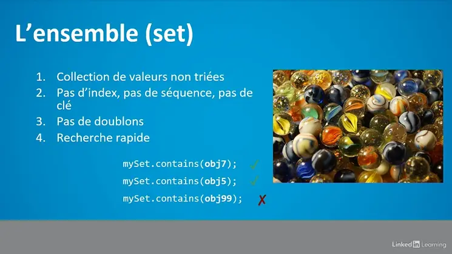
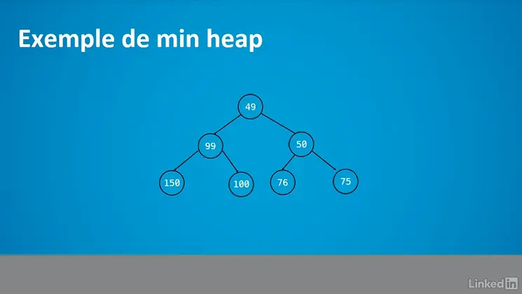
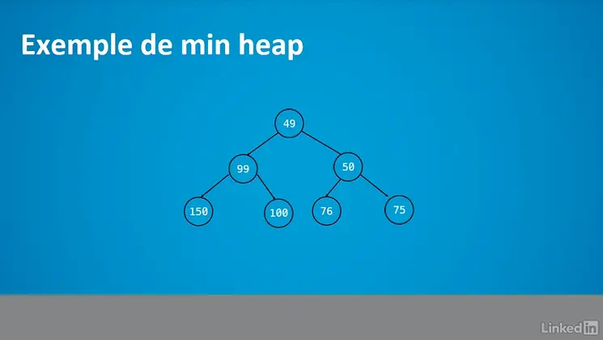

Vocabulaire
tuple : c'est une collection d'éléments regroupés.
struct : c'est un type de donnée complexe spécifique.
Les structures de données en programmation

Les structures de données simples


Les éléments de listes
Les files d'attentes et les piles
Les tableaux associatifs et leur implémentation


 


Les structures avancées

 



Récapitulatif